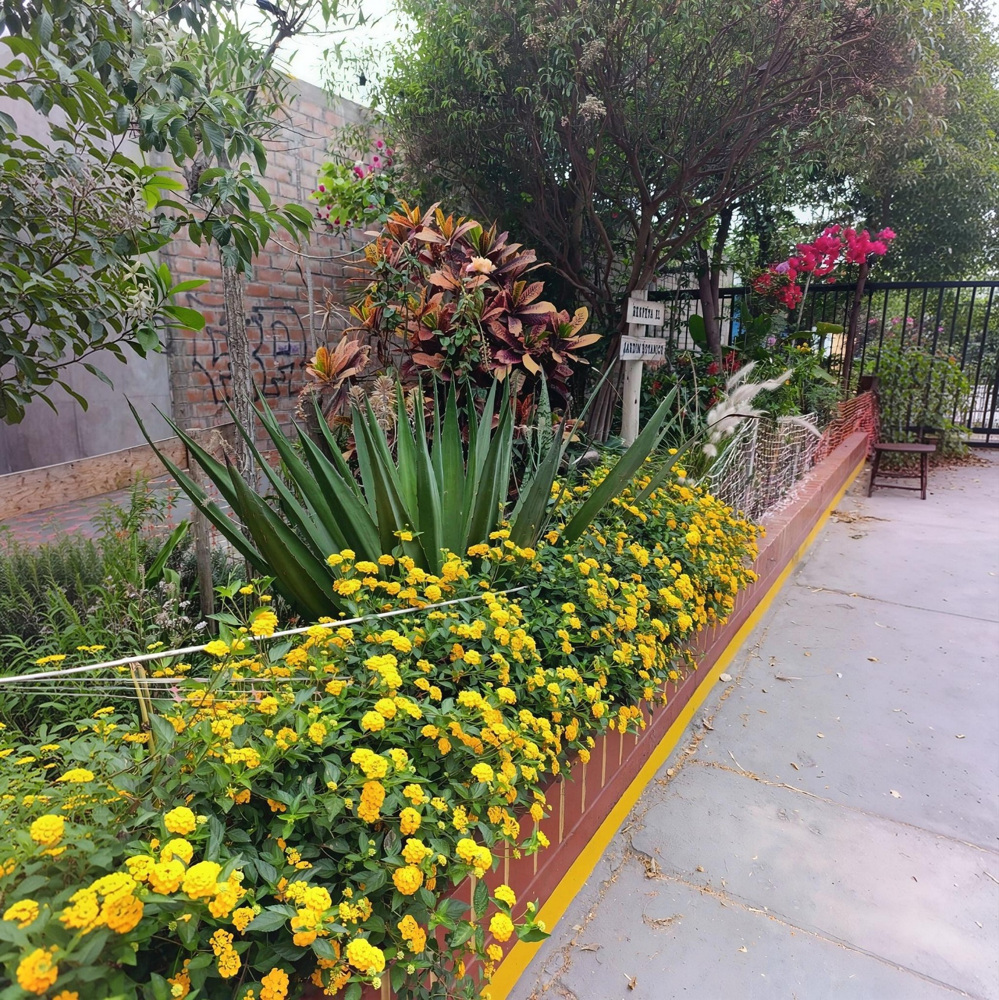

Diversidad vegetal
Conservar y cuidar distintas plantas permite construir un espacio de aprendizaje y observación permanente.

Proyecto 02 · Biodiversidad y educación ambiental
Un espacio vivo para cultivar biodiversidad, aprender de la naturaleza y fortalecer la relación de la comunidad con las plantas y su entorno.
El proyecto
El Jardín Botánico forma parte de los proyectos que Legado Botánico desarrolla en San Martín de Porres. Su propuesta integra el cuidado de la vegetación, la valoración de la biodiversidad y la educación ambiental en un espacio donde la comunidad puede aprender mediante la experiencia directa.
La información disponible sobre el proyecto permite entenderlo como un espacio vivo: las plantas, el suelo, la materia orgánica y los organismos que se relacionan con ellos forman parte de un mismo sistema.
Biodiversidad
La diversidad vegetal crea oportunidades para que distintas formas de vida encuentren alimento, refugio y condiciones adecuadas. Por eso, el valor del jardín no se limita a las especies que se plantan: también está en las relaciones ecológicas que comienzan a desarrollarse a su alrededor.
Conservar y cuidar distintas plantas permite construir un espacio de aprendizaje y observación permanente.
La vegetación puede ofrecer recursos para insectos, polinizadores, aves y otros organismos presentes en el entorno.
Registrar cambios y observar ciclos naturales convierte el jardín en un pequeño laboratorio vivo.
El cuidado cotidiano permite mantener un espacio verde y valorar la diversidad vegetal como patrimonio vivo.
El suelo también vive
El aprovechamiento de hojas, restos vegetales y compost conecta el jardín con un principio sencillo: los residuos orgánicos pueden regresar al ciclo natural y convertirse en parte del suelo.
Esta mirada también se relaciona con el trabajo de restauración de Legado Botánico: mejorar las condiciones del sustrato ayuda a sostener la vegetación y a crear un ambiente más favorable para la vida.
La materia orgánica alimenta procesos que no siempre vemos, pero que son fundamentales para mantener un suelo vivo.
Educación ambiental
Un jardín permite convertir conceptos ambientales en experiencias concretas. Sembrar, cuidar, observar y comprender de dónde provienen los alimentos ayuda a construir una relación más cercana y responsable con la naturaleza.
Participación
Las actividades de voluntariado permiten colaborar directamente con el cuidado del espacio y conocer el trabajo que existe detrás de cada planta. La participación comunitaria es parte del proyecto, no un elemento accesorio.
Escríbenos para conocer las próximas jornadas, formas de colaboración y materiales que pueden ser útiles.
Galería
Esta sección queda preparada para incorporar fotografías reales del jardín, especies, actividades, voluntariado y procesos de cultivo.
Las imágenes futuras sustituirán este espacio sin necesidad de modificar la estructura de la página.
Legado Botánico
El Jardín Botánico todavía está en construcción. Su historia también.
← Volver a Proyectos